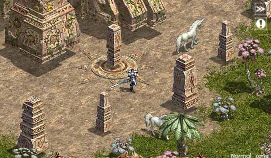

|
2003年7月2日
天堂第二部第一章正式登陸韓測！
天堂第二部的路線圖
來源：Lineage
Playforum
英文翻譯：Lineage
Compendium
第一章：光與影(Light and Shadow) - 2003年7月
加入新職業黑暗精靈，浮游之島，與萬靈藥(Elixir)（可以永遠增加能力值的道具，但不能突破25點的能力值上限，角色可以使用此類道具5次）
第二章：天與地(Sky and Earth) - 2003年11月
加入黑暗精靈的地下世界，加強圖像質素
第三章：生與死(Life and Death) - 2004年暑假
加入職業生涯系統，不同職業的技能系統，黑暗精靈的新區域"Diod"，新的攻城戰系統
第四章：太陽與月亮(Sun and Moon) - 2004年冬天
加入黑暗精靈的地下首都"Lastabad"，包括城堡，這會是第二部最大的更新
第五章：國王與奪位者(King and Pretender) -
2005年暑假
邪惡之神古蘭肯(Gran Kain)的巨大神殿，暗龍(Dark
Drasgon)，奪取王位者的故事結束
第六章：神與人(God and Human) - 2005年冬天
邪惡之神古蘭肯(Gran Kain)的真身出現
黑暗精靈簡介
來源：Lineage
Playforum
英文翻譯：Lineage
Compendium
黑暗精靈可以學至2級的普通法師魔法，每12級學1級。而每15級更可學習黑暗魔法，黑暗魔法共有3級，因此在45級時可以學會所有黑暗魔法。
| 等級 |
可以學的魔法 |
| 12 |
一級法師魔法 |
| 15 |
一級黑暗魔法 |
| 24 |
二級法師魔法 |
| 30 |
二級黑暗魔法 |
| 45 |
三級黑暗魔法 |
一級黑暗魔法：
| |
名稱 |
消費 |
時限 |
魔法延遲 |
效果 |
 |
盲點(Blind Hiding) |
15/0 |
30秒 |
10秒 |
在一段時間內隱身 |
|
附加劇毒(Enchant Venom) |
10/1/1 |
3分鐘 |
無 |
武器會附加毒攻擊 |
 |
念力石頭(Bring Stone) |
10/0 |
即時 |
無 |
利用石頭的力量去攻擊 |
|
影之盔甲(Shadow Armor) |
15/5 |
10分鐘 |
無 |
在一段時間內防禦力-3 |
二級黑暗魔法：
| |
名稱 |
消費 |
時限 |
魔法延遲 |
效果 |
 |
行走加速(Moving Acceleration) |
20/15 |
5分鐘 |
無 |
增加50%的行走速度，可以與加速術一起使用 |
 |
燃燒鬥志(Burning Spirit) |
30/10 |
8分鐘 |
3秒 |
增加攻擊能力 |
|
黑暗盲術(Dark Blind) |
15/10/1 |
1分鐘 |
1秒 |
使目標暫時失明 |
 |
劇毒防禦(Venom Resist) |
15/30/1 |
5分鐘 |
無 |
增加毒抗性 |
三級黑暗魔法：
| |
名稱 |
消費 |
時限 |
魔法延遲 |
效果 |
 |
破壞盔甲(Armor Break) |
30/10 |
8分鐘 |
無 |
暫時破壞目標的防禦力 |
 |
怪異閃避(Uncanny Dodge) |
30/20 |
5分鐘 |
無 |
增加防禦能力 |
 |
影之牙(Shadow Fang) |
30/0/2 |
10分鐘 |
無 |
武器的傷害力+4 |
|
最後一擊(Final Burn) |
HP及MP
降至1 |
即時 |
無 |
施法者的HP及MP降至1，對目標使出會心一擊 |
黑暗精靈不能使用雙手武器，不過他們有很多新加入的專用武器，例如雙劍，十字弓，爪及飛標等。他們不能使用普通的弓，而十字弓的速度介乎騎士與妖精之間。
另外，黑暗精靈能夠在黑暗中看得更清楚，他們沒有夜視術，但夜視的能力比普通人類更好。黑暗精靈的設定其實就是殺手：他們不能用重型盔甲、矛、棍、斧或雙手武器，不過他們比其他角色的行走速度快20%。
當黑暗用雙劍時，每次攻擊會打兩下，每下的傷害較弱，但加起來應該與其他攻擊差不多。另外十字弓有一定的機會造出會心一擊。要使用飛標的話就需要裝備飛標手套，飛標的攻擊距離比弓為短，但有較大的傷害。
在此章中亦新增了新的道具加強系統，道具有5個等級的加強能力，在加強時像加防加武一樣道具有機會會消失。新的及目前的裝備都可以加強，但部分不乎合黑暗精靈殺手背景的道具，例如伊娃之盾，便不能加強了。
由"黑暗石"(暫稱)制造的道具的安全值是6，其他的黑暗精靈道具則只有4，在遊戲故事中黑暗石與"Bring
Stone"的魔法攻擊來自同一種力量。
夢幻之島簡介
來源：Lineage
Playforum
英文翻譯：Lineage
Compendium
夢幻之島(Phantasm Island)是浮在天空的島，在那裡死亡後是沒有任何懲罰，不會掉經驗值或道具。我們可以通過亞丁城旁的吉普賽人村的特別NPC傳送到夢幻之島，費用為1000金幣，而且沒有等級限制，整個地區都是安全區域，假如在那裡死亡，是會回到吉普賽人村。
而此島的特點是那裡的怪物擁有不同的能力。你永遠不會知道你正在與強或弱的怪物戰鬥，因為他們的外觀都是一樣的。
宣傳海報：
一些抓圖：


|